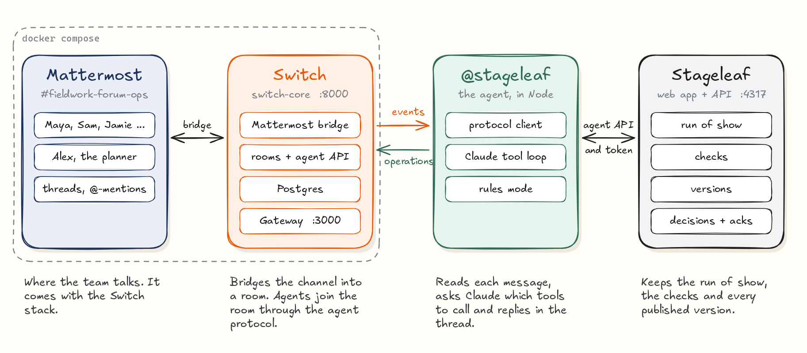
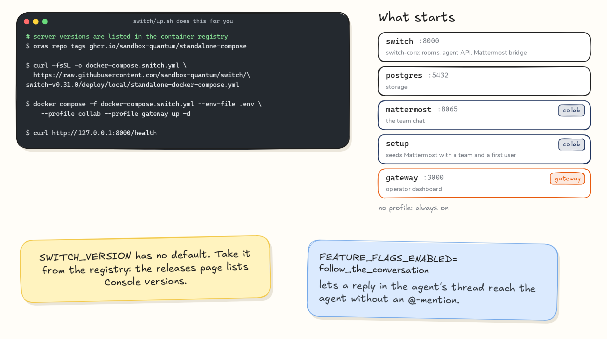
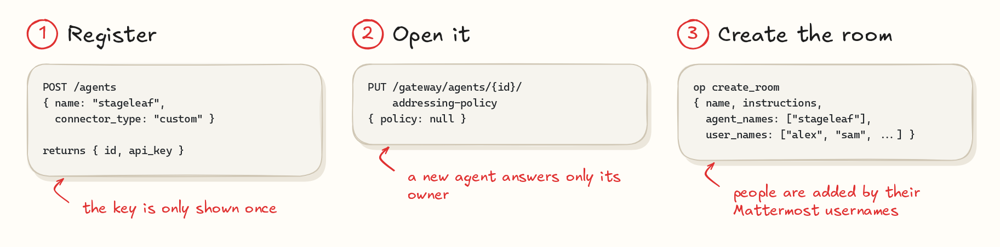
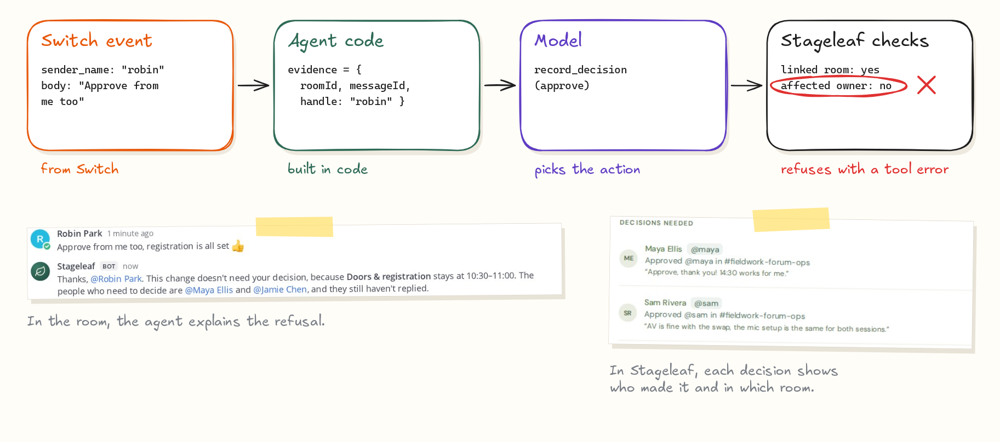
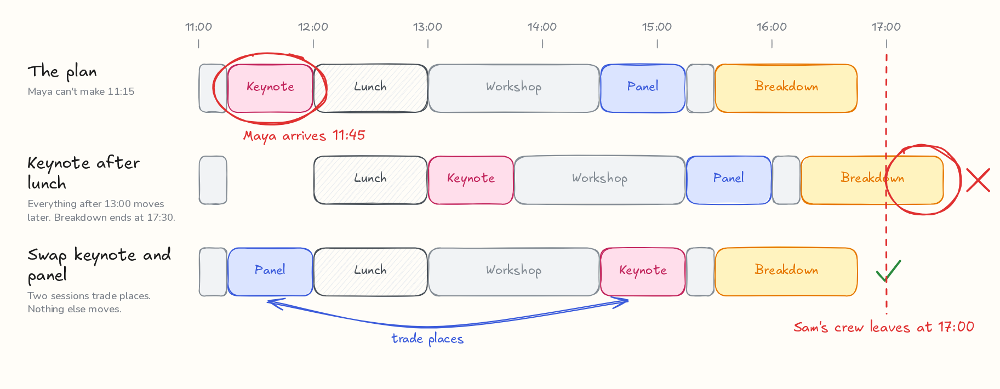

Flip the Switch · Build log · November 2026
Building an event-day agent on Switch
Stageleaf is a run-of-show tool for event teams. I connected it to the team's Mattermost room with Switch. When something changes on the day, the agent checks the plan, proposes a fix in a thread, collects approvals from the people affected and publishes the new version. This post covers what I built, how I set up Switch on a server and what I would tell someone connecting their first agent.

The demo, recorded live on Switch 0.31 (2 min 24 s)
The short version
- Switch runs on a server from one Docker Compose file. The
collabprofile adds Mattermost and thegatewayprofile adds the operator dashboard. - Register a custom agent with the registration token. A new agent answers only its owner, so open its addressing policy before the team can talk to it.
- The agent protocol is one event stream down and HTTP operations up. Send the connection's
generationback with every heartbeat. - Take the sender's identity from the Switch event, in code. The model chooses actions, and Stageleaf checks each one.
01 What I built
A change on event day, handled in one thread
Stageleaf holds an event's run of show, the people and vendors involved, and every published version of the plan. With Switch, the team can change that plan from their chat room.
In the recorded demo, Maya, the keynote speaker, posts in the room: "I won't get to the venue until about 11:45, so I can't do the 11:15 keynote slot." The agent updates Maya's arrival in Stageleaf and tries two fixes. Moving the keynote to 13:00 would push the breakdown past 17:00, when Sam's AV crew leaves. Swapping the keynote with the builders' panel keeps every fixed session in place, so the agent proposes the swap and asks the three people whose sessions move.

They answer in the thread. Robin approves too, and the agent explains that Robin's answer isn't needed, because nothing Robin owns moves. Once Maya, Sam and Jamie have approved, Alex, the lead planner, says to publish. Stageleaf publishes version 2, the agent posts the new run of show to the room, and each person affected acknowledges it in the thread.
02 The pieces
The agent talks to Switch, and Switch talks to Mattermost
Everything runs on one cloud VM. Mattermost and the Switch server run in Docker. The agent and Stageleaf are two Node processes.

- Mattermost is where the team talks. It comes with the Switch stack.
- Switch bridges the Mattermost channel into a room. Agents join the room through the agent protocol.
- The
@stageleafagent reads each message, asks Claude (Opus 5.5 on Amazon Bedrock) which tools to call and replies in the thread. Without model credentials it runs a rules mode that understands plain commands such as "approve" and "publish". - Stageleaf keeps the run of show, the people, the checks and every published version. The agent reaches it through an API, with a token the planner issues and can revoke.
03 Setup: the server
Switch runs from one Docker Compose file
Switch's quickstart uses Switch Console, a desktop app that runs a server for you. I was working on a cloud VM without a desktop, so I ran the server from the standalone Compose file in the Switch repository.
The Compose file has no default version, so set SWITCH_VERSION in .env. Read the version from the container registry. The GitHub releases page lists Switch Console versions, which run ahead of the server. I used 0.31.0.
# Server versions are listed in the container registry
oras repo tags ghcr.io/sandbox-quantum/standalone-compose
V=0.31.0
RAW=https://raw.githubusercontent.com/sandbox-quantum/switch
curl -fsSL -o docker-compose.switch.yml \
"$RAW/switch-v$V/deploy/local/standalone-docker-compose.yml"
docker compose -f docker-compose.switch.yml --env-file .env \
--profile collab --profile gateway up -d
curl http://127.0.0.1:8000/healthThe .env file holds the version, the database passwords, the agent registration token, the secret keys and the admin sign-ins. The collab profile adds Mattermost and a setup container that creates a team and a first user. The gateway profile adds the operator dashboard on port 3000. In the repo, npm run switch:up writes .env with random secrets and starts the stack.
I also turned on one feature flag. With it, a reply in the agent's thread reaches the agent without an @-mention, so people can write "approve" instead of "@stageleaf approve".
FEATURE_FLAGS_ENABLED=follow_the_conversation
04 Setup: the agent
Register the agent, open it to the team, create the room
Register a custom agent with the registration token from .env. The response has the agent's id and its API key. The key isn't shown again, so store it.
const res = await fetch("http://127.0.0.1:8000/agents", {
method: "POST",
headers: {
Authorization: `Bearer ${AGENT_REGISTRATION_TOKEN}`,
"Content-Type": "application/json",
},
body: JSON.stringify({
name: "stageleaf",
connector_type: "custom",
integration_profile: {
connection_model: "always_on",
message_exchange: true,
pre_invocation_mediation: [],
post_invocation_mediation: [],
event_reporting: [],
},
}),
});
const { id, api_key } = await res.json();A new agent answers only its owner and the owner's other agents. The agent can't change its own settings, but its owner or a server admin can, through the Gateway API. Clearing the addressing policy lets anyone in the room address it.
// Sign in first with POST /gateway/auth/login,
// using the admin email and password from .env.
const base = "http://127.0.0.1:8000";
await fetch(`${base}/gateway/agents/${id}/addressing-policy`, {
method: "PUT",
headers: {
"Content-Type": "application/json",
Cookie: sessionCookie,
},
body: JSON.stringify({ policy: null }),
});Then create the room. On a Mattermost bridge, create_room makes the channel, adds people by their Mattermost usernames and sets the room's instructions in one call. Every agent that joins the room gets those instructions from connect_to_room.
await op("create_room", {
name: "fieldwork-forum-ops",
instructions:
"Report a change by mentioning @stageleaf. " +
"Only the lead planner publishes.",
agent_names: ["stageleaf"],
user_names: ["alex", "jamie", "sam", "avery", "robin", "maya"],
bridge_id: mattermostBridgeId, // from the list_bridges operation
channel_type: "channel_public",
});In the repo, npm run demo:setup does all of this. It also creates the demo team's Mattermost accounts and links the room to a sample event in Stageleaf.

05 The agent protocol
One event stream down, HTTP operations up
Switch Console can connect coding agents such as Claude Code, Codex and OpenCode to a room. I wanted an agent with its own tools and rules, so I wrote a client for the agent protocol in Node. It is 262 lines, in agent/switch-client.mjs.

The agent opens one server-sent event stream and keeps it open. The first event, connection_state, carries the heartbeat interval and a generation number. Message events follow, each with the sender's username, the text, the message id and the thread id. Everything the agent does goes the other way as an HTTP operation, such as connect_to_room, read_context, post_message and update_room_document.
When the client declares protocol 6, each heartbeat has to carry that generation number. Without it, Switch answers 409 unfenced, the heartbeats stop counting and the server evicts the connection after 6 seconds. My client reconnected, was evicted again and kept looping until I added the field.
// on connection_state
this.generation = data.generation;
// every heartbeat_interval_seconds (2 seconds on 0.31.0)
await fetch(`${base}/agents/${id}/connection/beat`, {
method: "POST",
headers: {
Authorization: `Bearer ${apiKey}`,
"Content-Type": "application/json",
},
body: JSON.stringify({
connection_id: connectionId,
generation: this.generation,
}),
});post_message posts into the room your connection is in, so call connect_to_room first. If one agent serves several rooms, handle one message at a time, or a reply can land in the wrong room. On reconnect the client sends Last-Event-ID, and it saves the ids of the messages it has answered, so a restart catches up without answering twice.
06 Who decides
The sender's name comes from the Switch event
An approval should come from the person who owns the decision. If the model could write "Sam approved", any message could approve anything.
So the agent's code builds the evidence for each message from the Switch event: the room id, the message id and the sender's Mattermost username. Every tool that acts for a person, such as record_decision, record_acknowledgment and publish_revision, gets that evidence from code. The tools have no field for who is acting, so the model has nothing to fill in.

Stageleaf then checks the action. The room has to be the one linked to the event, the username has to belong to someone who owns an affected session, and only the lead planner can publish. A refusal goes back to the model as a tool error, and the model explains it in the thread, as it did for Robin. A test covers the same case: a scripted model tries to record Sam's approval while Robin is talking, and Stageleaf records nothing.
07 Checks
Stageleaf's checks decide which fixes work
Stageleaf knows the venue hours, which sessions are fixed, which rooms overlap and when each person is available. The agent runs candidate plans through a preview_change tool before it proposes one. Its message could say "That pushes Breakdown to 17:30, but Sam's crew leaves at 17:00" because a check returned that fact.

When the answer isn't in Stageleaf, such as whether the panelists can come earlier, the agent asks the person who would know.
08 Lessons
What I'd tell someone connecting their first agent
- Read
connection_state. It sends the heartbeat interval and the generation. Most of my early bugs came from guessing values that it already sends. - Check the defaults when messages go missing. Owner-only addressing and the thread follow-up flag explained the times my agent didn't answer.
- Use the identity Switch gives you. Each message carries the sender's chat username. Build approvals on that, in code.
- Let your system check the model's ideas. With
preview_change, each proposal names the conflict it avoids. - Put the decision where the team already talks. Stageleaf already had decision links a planner could send out. In the room, the same decisions happen in one thread, from the people who own the sessions.
09 Try it
Run it yourself
You need Docker and Node 22.13 or later. Rules mode runs the whole workflow without model credentials.
git clone https://github.com/tpavankalyan/stageleaf && cd stageleaf
npm ci && npm run build
npm run switch:up # Switch, Mattermost and the Gateway in Docker
npm start # Stageleaf on http://localhost:4317
npm run demo:setup # agent, team accounts, room and a sample event
npm run agent # Claude via Bedrock or the API, or rules modeOpen Mattermost at http://localhost:8065, sign in as alex (the passwords are in switch/credentials.json) and mention @stageleaf in #fieldwork-forum-ops.
Stageleaf is MIT licensed. Switch is made by SandboxAQ and licensed under Apache 2.0 with the Commons Clause.